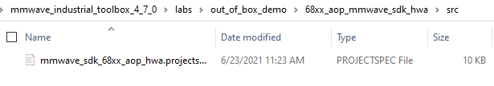
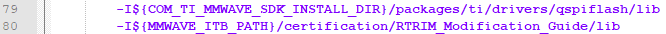
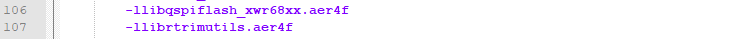
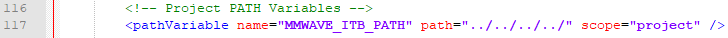
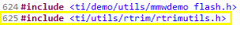
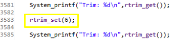
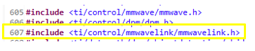
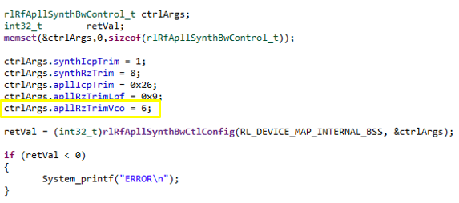
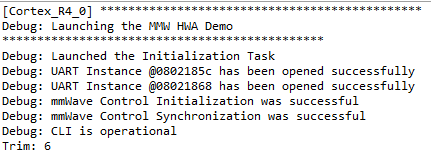

# Introduction
The goal of this guide is to provide customers the ability to retrieve and change the value of the
RTRIM value within TI millimeter wave devices. Option 1 is for all supported devices. Option 2 is **just** for xWR68xx devices.
Provided in this guide are following resources:
* rtrimutils.h – header file for rtrim_get() and rtrim_set() API.
* rtrimutils.aer4f – library file for rtrim_get() and rtrim_set() API.
* main.c – single modified source file within the Out of Box Demo. Just for reference
purposes. Versions for both option 1 and option 2 are provided.
* xwr64xxAOP_mmw_demo.bin – a prebuilt binary which can be flashed to the radar
device which will have an RTRIM value of 6. **Can only be flashed to an AOP device**. Binaries for both option 1 and option 2 are provided.
This guide requires the customer to have successfully run the unmodified OOB demo provided in the
[mmWave Industrial Toolbox](../../../labs/Out_Of_Box_Demo/docs/Out_Of_Box_Demo_User_Guide.html)
**NOTE**: This guide uses the IWR6843AOP as an example, but this guide is applicable to other devices as well with small differences.
# Procedure
## Step 1: Modify the OOB projectspec file
Open the following file in your preferred text editor:
`<INDUSTRIAL_TOOLBOX_INSTALL_PATH>\labs\out_of_box_demo\68xx_aop_mmwave_sdk_hwa\src\mmwave_sdk_68xx_aop_hwa.projectspec`

Make the following additions to the projectspec file. This will ensure that rtrimutils.aer4f is properly linked when the project is built in CCS.



## Step 2: Modify main.c in Code Composer Studio
**NOTE:** For demos which include both a R4F as well as a DSP, this file will be mss_main.c, but the modifications will be the same.
### Option 1: rtrim_set() and rtrim_get() API
Include rtrimutils.h as shown below:

Call the API’s to read or write the RTRIM value as needed. Below shows an example of changing the RTRIM default value of 0x12 to 0x6.

### Option 2: rlRfApllSynthBwCtlConfig() API (Only for xWR68xx devices)
Include the following mmwavelink.h header file at the beginning of main.c as shown below.

Below is an example of how to call rlRfApllSynthBwCtlConfig() to modify the trim value.
The apllRxTrimVco field is assigned the desired trim value. All other fields are given their default values.

**NOTE:** These API’s should be called at the end of the MmwDemo_initTask as shown below. Please reference the provided main.c file for each given option.
# Results
To demonstrate all of the work done up to this point, the customer will need to run the OOB in Debug Mode as described in the
[OOB Demo User’s Guide.](../../../labs/Out_Of_Box_Demo/docs/Out_Of_Box_Demo_User_Guide.html)
Once the customer successfully gets the demo running the they should see something similar to the following:

# Conclusion
Assuming all of the steps above were correctly implemented, the customer will be able to change the RTRIM value as desired and measure the effects of changing the RTRIM value.
# Need More Help?
* Search for your issue or post a new question on the
[mmWave E2E forums](https://e2e.ti.com/support/sensor/mmwave_sensors/f/1023)